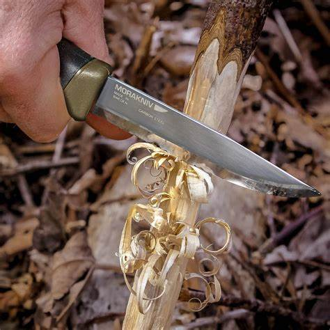
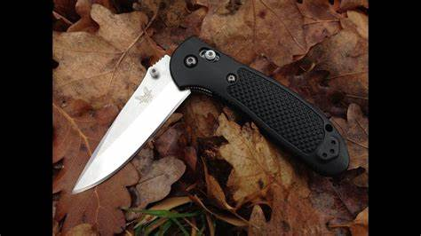
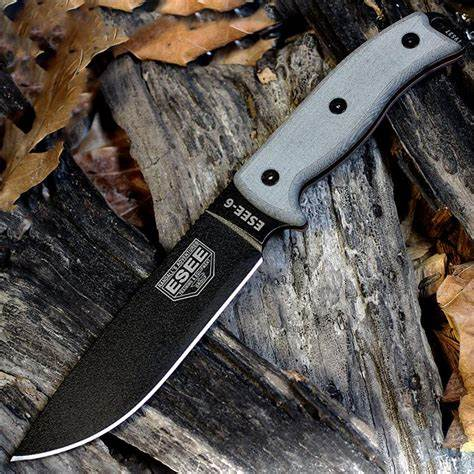

At Outdoorsman Media, we are passionate about equipping outdoor enthusiasts of all experience levels with the best tools and advice for their adventures. From beginners stepping into the world of camping to seasoned experts who need reliable, high-performance gear, our curated selection offers something for everyone. Our team provides custom recommendations and guidance, ensuring you find the right equipment to meet your specific needs and make the most of every outdoor experience. Dive into our product selection to explore gear that will enhance your time in nature, no matter your skill level.
| Experience Level | Item | Description | Price | Image |
|---|---|---|---|---|
| Beginner | Morakniv Companion | The Morakniv Companion is an affordable, lightweight, and versatile knife perfect for beginners. It features a 4.1-inch carbon steel blade that holds an edge well and is easy to sharpen. The comfortable grip and finger guard provide safety during use, making it a great choice for those new to camping and outdoor activities. | $18.99 |  |
| Advanced | Benchmade Griptilian 551 | The Benchmade Griptilian 551 is an excellent option for advanced users who require a durable and reliable folding knife. With a 3.45-inch stainless steel blade, it features a robust handle design with textured polymer for a secure grip. The AXIS lock mechanism allows for easy one-handed opening and closing, making it suitable for various camping tasks. | $144.00 |  |
| Master | ESEE-6 | The ESEE-6 is designed for experienced campers and outdoor enthusiasts who need a heavy-duty survival knife. Its 6.5-inch high-carbon steel blade is perfect for heavy-duty tasks like chopping, batoning, and preparing food. The robust micarta handle provides a comfortable grip, and the knife is built to withstand tough conditions. | $175.28 |  |